Talisman
A check-in app that builds emotional intelligence.
A check-in app that builds emotional intelligence.
Social media and pop psychology perpetuate the myth that happiness equals success, leading many to interpret negative emotions as signs of failure.
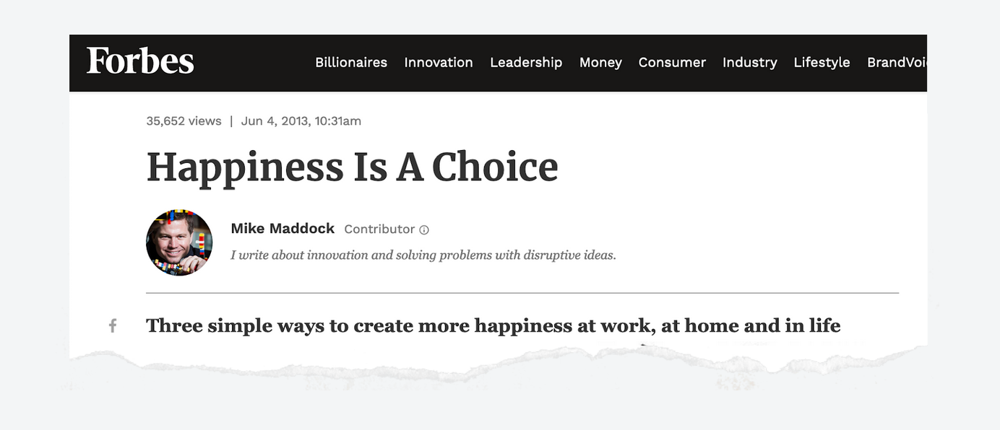In a culture that lacks preventive mental healthcare solutions or open conversations, these myths make it harder for young people to learn how to navigate tough emotions in healthy ways. So how might we turn the quest for happiness into a quest for emotional health?
Talisman is an app that builds emotional fluency one check-in at a time. It guides users to identify emotions, then introduces activities that build resilience and emotional intelligence.
An interactive check-in lets users visualize their feelings. We often talk about our emotions in abstract language like feeling “blue” or “frazzled” or “on edge,” and that’s where Talisman begins.
Based on user inputs during check in, Talisman responds empathetically and suggests activities designed to develop key emotional intelligence (EQ) skills.
Talisman shares social reinforcement in key moments to help users feel less alone and break down barriers to taking productive action.
Talisman tracks emotional intelligence factors rather than good or bad days to encourage a growth mindset.
Here's how the project evolved ↴
Talisman originated from the research my teammates and I did for our graduate thesis project. My role was lead product designer. Over the course of 6 months, we identified a problem and designed a solution to motivate behavior change and better mental health outcomes for young people.
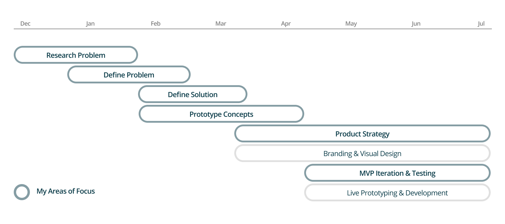
Secondary Research

Interviews & Card Sorts

Prototyping

Figma

Javascript
After reviewing hundreds of pages of academic research and media, as well as interviewing 17 young people, we began to sketch out the core problem—something I call the repression cycle.
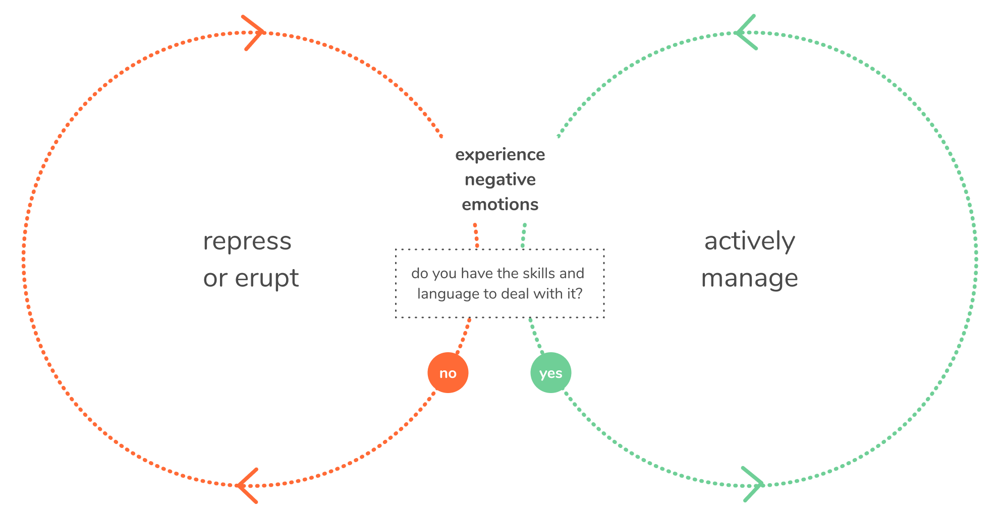This helped us understand that our goal was not to solve feelings, but to help young people develop the resilience they’d need to handle tough days head-on. Next, a series of card sorts, concept prototypes, and competitive research helped us unearth 3 key insights that would end up driving design:
I built out an impact pathway to better understand the behaviors that we wanted to influence. One key thing that stood out: all the psychological targets related to the adoption of a growth mindset.
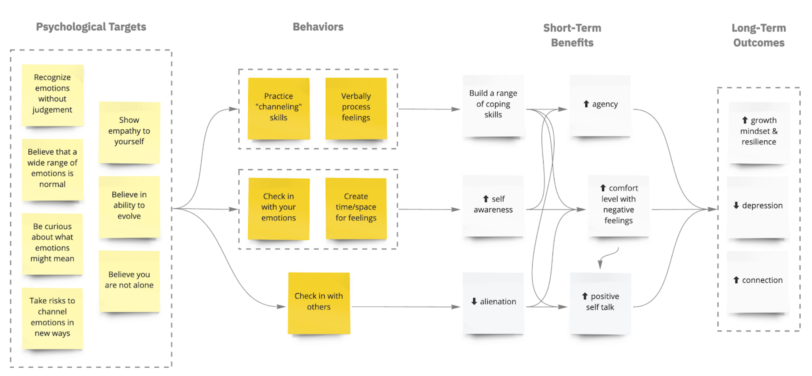A product landscape analysis showed that redirecting focus away from good/bad moods and toward emotional growth factors could be a key differentiator, as well.
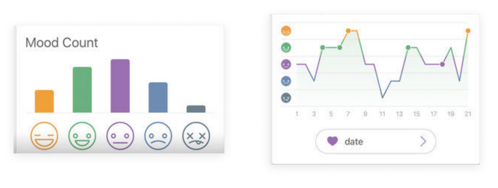Based on our research, I knew that many of the biggest barriers to emotional growth related to a lack of skills.
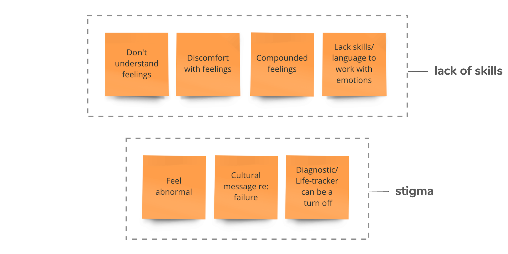So through a series of card sorts, I wanted to explore how people thought about challenging emotions. I found that young people use metaphors, colors, and drawings to explain feelings that were uncomfortable.
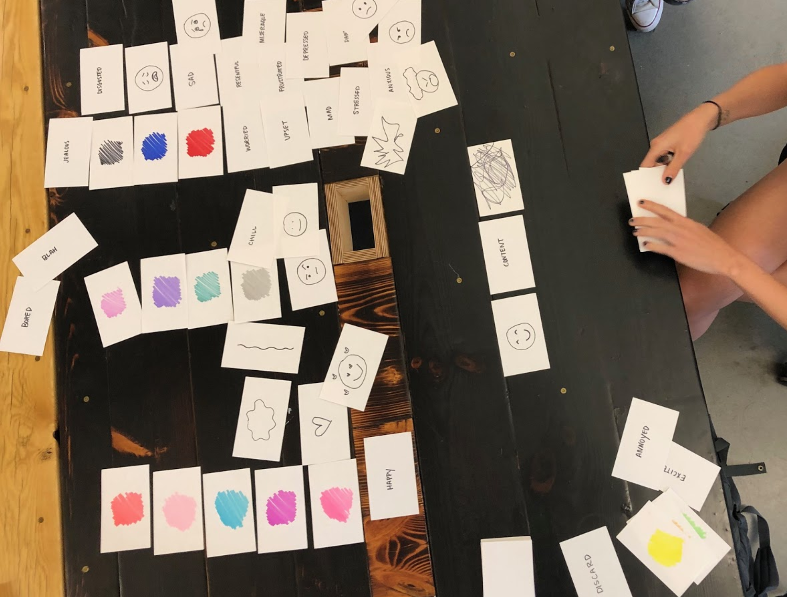A series of concept prototypes at progressing levels of fidelity helped to validate this idea and allow us to explore ways to use visualization as a tool for self-awareness.
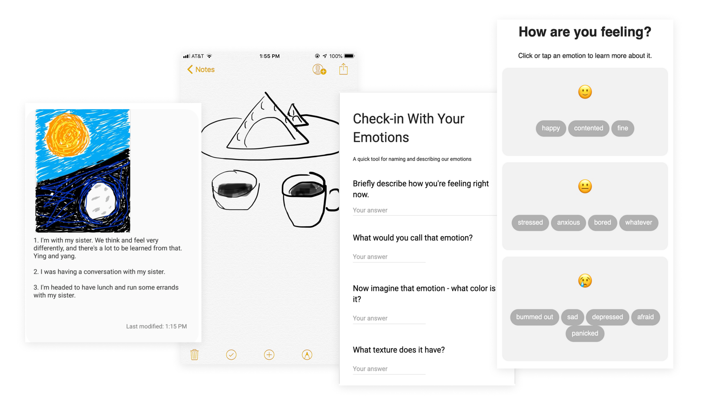Finally, an early prototyped exploration of suggested activities taught us that users expect nuanced content personalized to their current mood state.
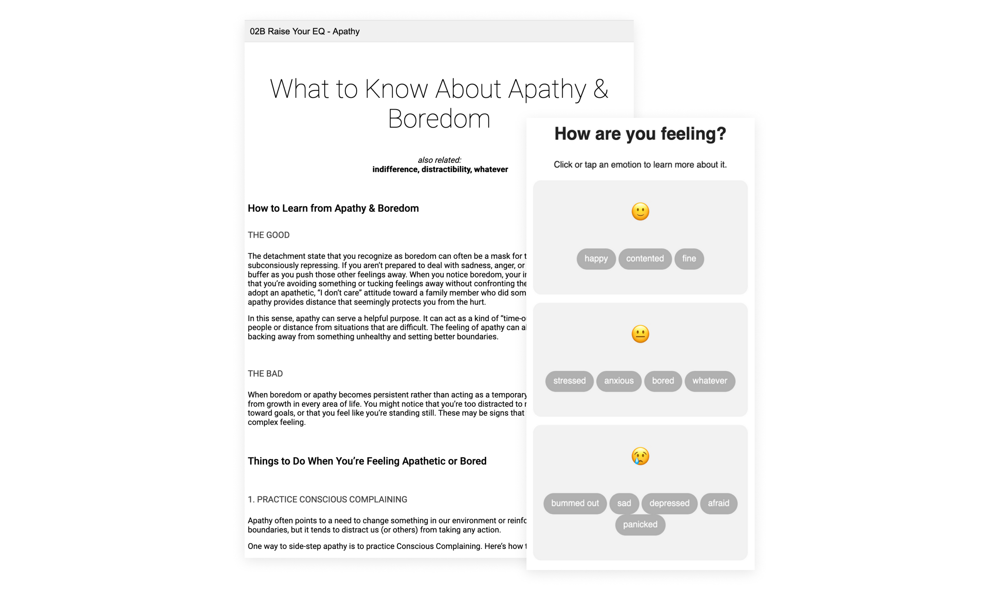Based on our research, my team and I developed our problem statement. We needed to build a tool that would guide young people toward emotional fluency.
I developed two personas to better understand our primary user archetypes: the empath, who is tuned into their emotions but not always adept at managing them; and the struggler, who has difficulty identifying or understanding emotions in the first place.
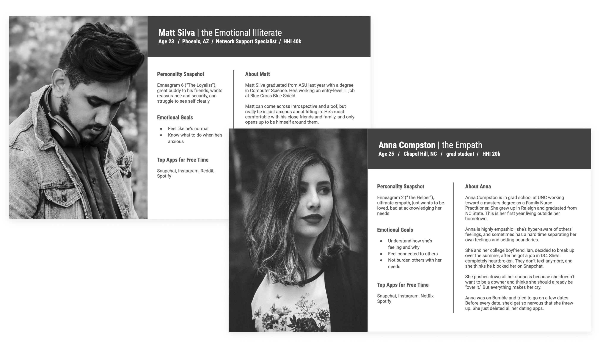My team and I pitched Talisman at NVC, a venture capital competition at the University of Colorado Boulder, where we advanced to the final round.
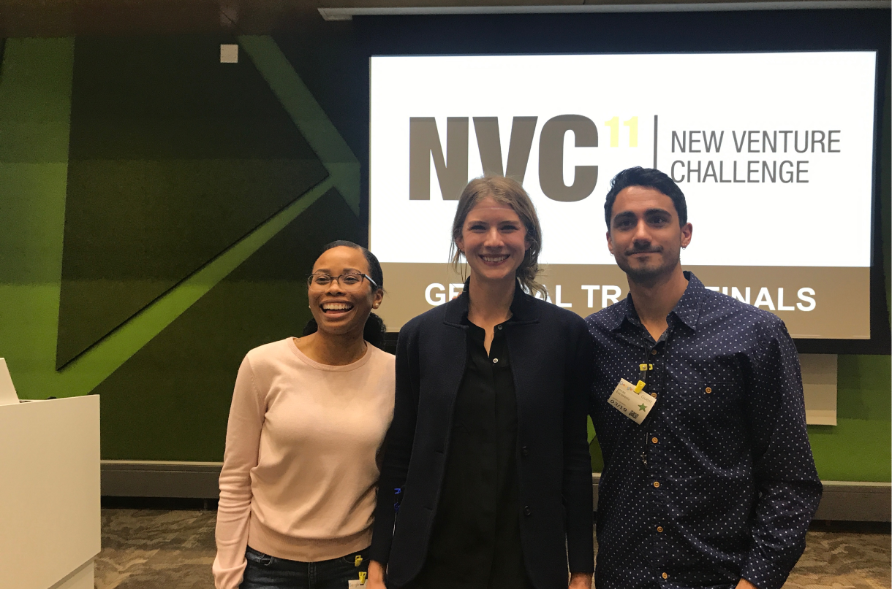